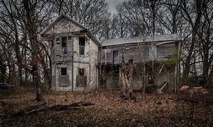

A Short Story
The Lost Key
Once, in a small, quiet town nestled between hills, there was an old, abandoned house that intrigued everyone. The house, covered in ivy and with windows darkened by years of dust, had a mystery surrounding it. Local children would dare each other to approach it, but no one ever ventured inside. One day, a curious young girl named Emma found a rusty key while walking through the woods. It was an odd thing to discover, and she immediately thought it might open the door to the abandoned house.
